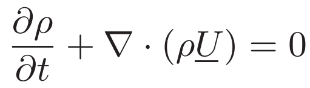
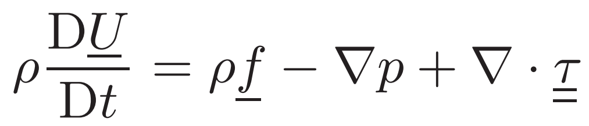
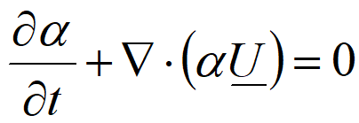
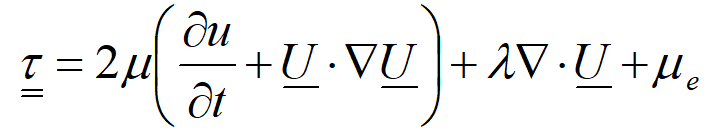
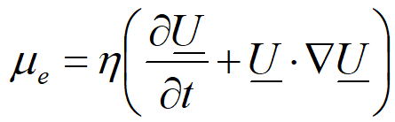
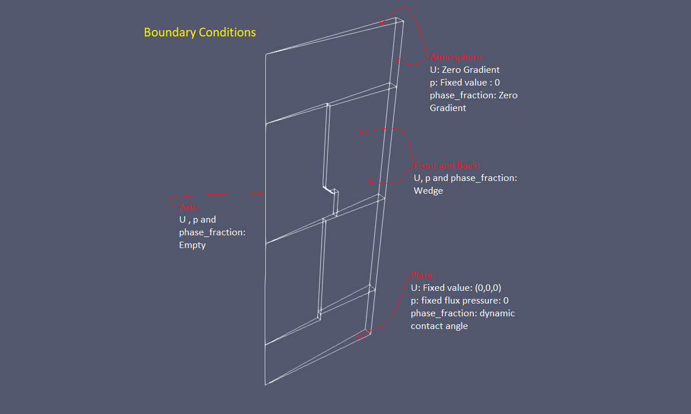
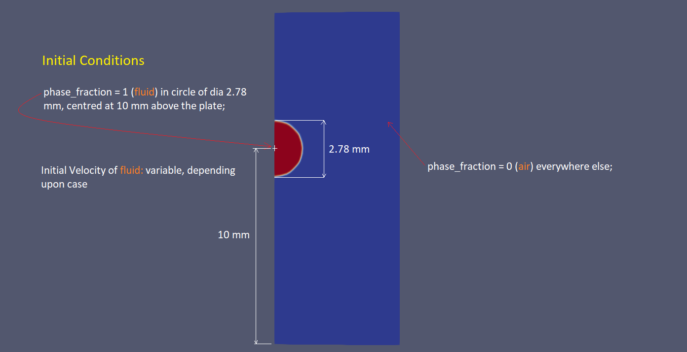
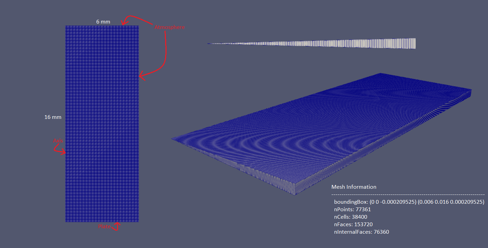
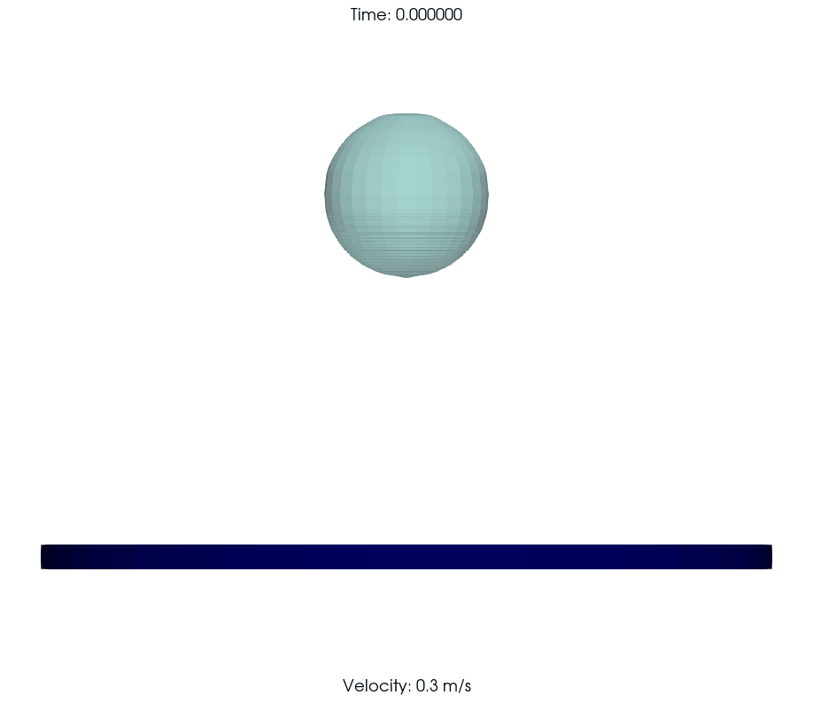
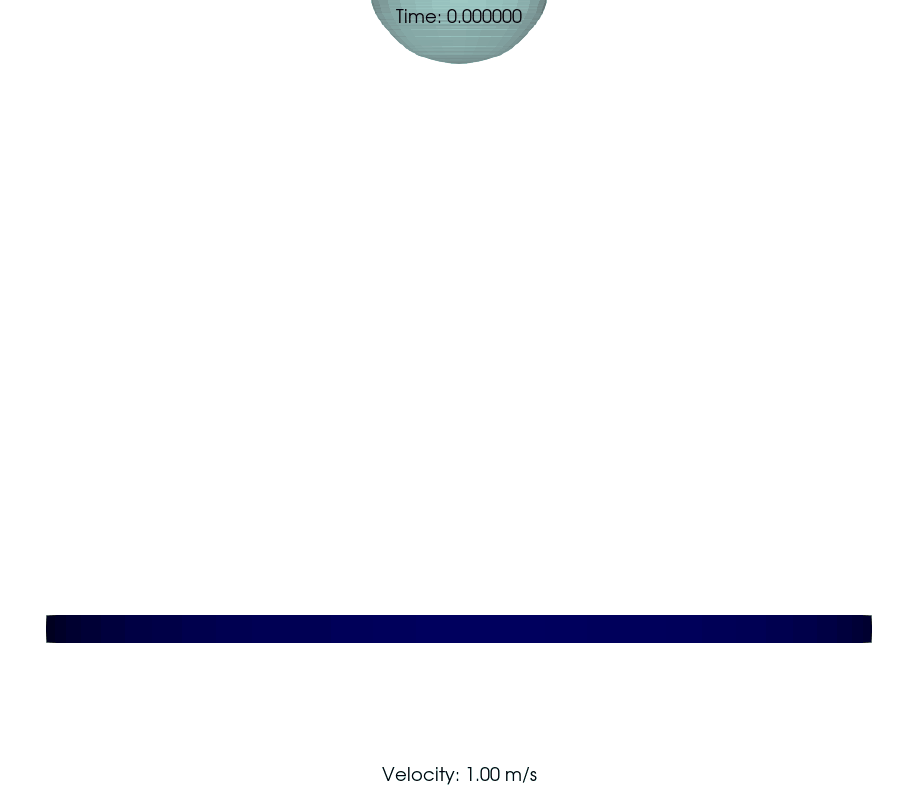

Projects
Impact Dynamics of Polymeric Drops on Superhydrophobic Surfaces
Non-Newtonian fluids
Fluids that do not exhibit the conventional Newtonian behavior of constant viscosity are known as non-Newtonian fluids. The viscosity of such fluids changes with applied stress or shear rate. These fluids can exhibit shear-thinning behavior, where the viscosity decreases with increasing shear rate or shear-thickening behavior, where it increases with increasing shear rate. They are commonly found in everyday substances such as ketchup, toothpaste, and quicksand, and their unique properties make them useful in various industrial applications, such as inks, paints, and drilling fluids.
Viscoelastic fluids are a specific type of non-Newtonian fluids that exhibit both viscous and elastic behavior. They possess time-dependent responses, characterized by a combination of viscosity and elasticity. These fluids demonstrate phenomena such as stress relaxation, creep, and memory effects, making them valuable in applications such as polymer melts, biological fluids, and viscoelastic materials. Polymeric solutions, e.g the considered PAM-water solution shows viscoelastic behaviuor.
Simulation Setup
Governing Equations
The mathematical model considered is of an isothermal incompressible flow of a viscous, non-Newtonian fluid (mean viscoelastic fluid).
The continuity equation (equation of conservation of mass):
The conservation of momentum equation:
Volume of Fluid (VOF) Method
The Volume of Fluid (VOF) method is a numerical technique used to simulate and analyze two-phase flows, where the interface between the two fluids is of interest. It tracks the volume fraction of each fluid within a computational domain by solving a transport equation.
The VOF method uses the following equation:
where α is the volume fraction of the fluid.
This equation governs the advection of the volume fraction, ensuring conservation as the interface moves.
Additionally, the VOF method requires an interface reconstruction algorithm to accurately determine the position of the fluid interface within the computational domain.
The interface reconstruction algorithm used: piecewise linear interface calculation (PLIC). The PLIC algorithm starts by identifying cells containing the interface using a threshold value of the volume fraction. The interface is then represented by line segments connecting the centroids of these cells. To calculate the length and position of these line segments, PLIC considers the intersection points between the interface and the faces of the grid cells.
Constitutive Model
The Oldroyd-B constitutive model is used for the fluid (polymeric solution), which introduces the so called "extra-stress tensor" or the upper-convected time derivative of the rate-of-strain tensor. This tensor accounts for the material's elasticity and relates it to the deformation rate.
The constitutive equation of the Oldroyd-B model:
where 𝜏 is the total stress tensor, μ is the dynamic viscosity, U is the velocity vector, λ is the relaxation time, and μe represents the extra stress tensor.
The extra-stress tensor:
where η is the relaxation modulus
Air is modelled as a Newtonian Fluid.
Boundary Conditions and Initial Conditions
 Grid and Numerical Solution Parameters
Results
PAM-water solution drops of 500 PPM, 1000 PPM, 1500 PPM and 2000 PPM concentrations of PAM are considered at impact velocities - 0.3mps, 0.5mps, 0.75mps, 1.00mps, 1.20mps and 1.50mps
| 2000 PPM PAM at 0.30 m/s | 2000 PPM PAM at 1.00 m/s |
|---|---|
|  |  |
 vs Time (s) for 2000 PPM.svg) |
 vs. Weber Number for 2000 PPM.svg) |
NOTE: Due to pending publication, the experimentally obtained values, comprehensive numerical results and validation data are not shared publicly.